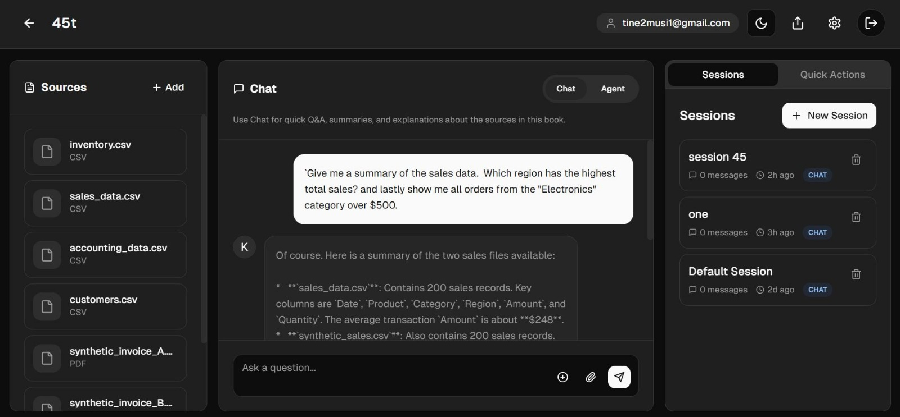
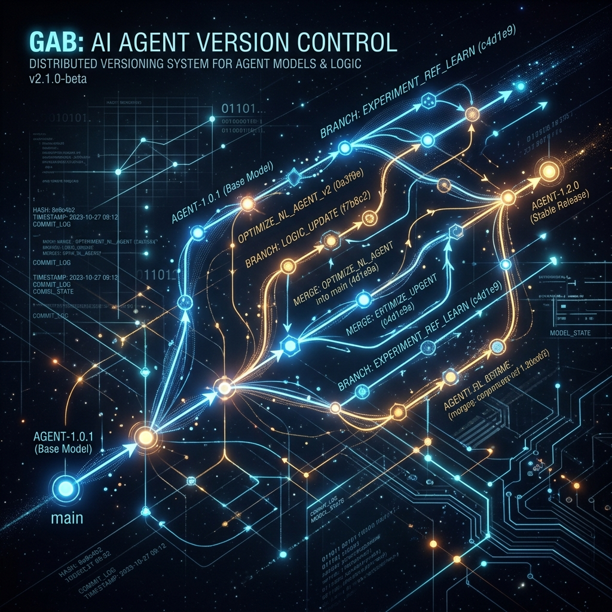
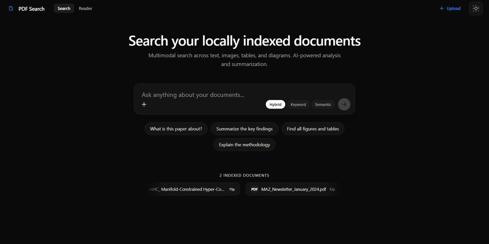

Projects Gallery

Keeper
LLM-powered super agent designed for high-precision accounting and bookkeeping tasks. Integrates autonomous verification loops.

Gab
Version control (Git) specifically for AI agents. Tracks and branches multi-agent interactions to debug collective reasoning errors using a Merkle DAG.

Pdf-Search
Multimodal semantic search across large-scale PDF repositories using advanced vector retrieval and OCR refinement.
Research Papers
Investigating the cognitive boundaries of models and formalizing training paradigms.
OmniEmbed: Reverse-Engineering Universal Embeddings from Qwen3-Omni
Intercepting and extracting shared representation space across text, audio, images, and video dynamically mid-inference without fine-tuning, leveraging zero-mean standardization and ZCA Whitening decorrelation to calculate highly functional 4096-Dimensional dense structural embeddings.
Structured Chain-of-Thought Reasoning via Typed Inference Modes
Proposed a training framework that extends standard chain-of-thought (CoT) tags to typed cognitive operations ('Abduction', 'Deduction', 'Decomposition'). Uses RL on process rewards, combined with hierarchical tag-based loss masking, steering Qwen models to logically switch between cognitive states.
Do Language Models Construct Internal World Models?
Investigating whether models establish "World Models" during training, allowing them to simulate virtual runtime states of executable routines internally (such as Python logic execution sequences or Custom Minimal Instruction Sets) absent an external tool. Employing Qwen 0.5B to 1.5B via rigorous control simulations on Google Colab.